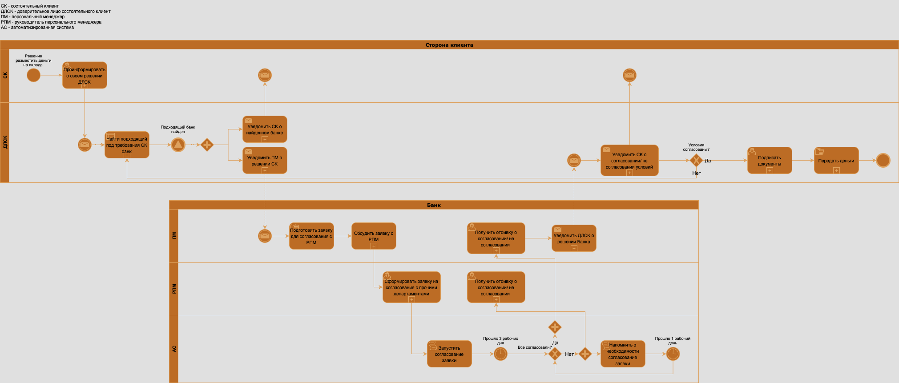

Кейс: Состоятельные клиенты
Задания для собеседования · Состоятельные клиенты
📋 Контекст
Серия продуктовых задач для работы с состоятельными клиентами банка. Кейс охватывает описание бизнес-процессов, анализ транзакционного бизнеса и работу с VIP-сегментом.
Бизнес-процесс открытия вклада
Описать бизнес-процесс открытия вклада на сумму 1 миллиард рублей
Ниже представлена верхнеуровневая BPMN-диаграмма бизнес-процесса открытия вклада на сумму 1 миллиард рублей с множеством процессов, которые должны раскрываться в подпроцессы.
📊 Участники процесса:
Сторона клиента:
- СК — состоятельный клиент
- ДЛСК — доверенное лицо состоятельного клиента
Банк:
- ПМ — персональный менеджер
- РПМ — руководитель персонального менеджера
- АС — автоматизированная система банка
Диаграмма показывает взаимодействие между клиентом и банком на всех этапах открытия вклада: от принятия решения до передачи денег и подписания документов.

BPMN-диаграмма процесса открытия вклада (кликните для просмотра в полном размере)
Анализ транзакционного бизнеса
Почему банк теряет долю в транзакционном бизнесе на рынке состоятельных клиентов?
Для начала разберёмся с тем, что есть "транзакционный бизнес". Транзакционный бизнес — это бизнес, который приносит транзакционный комиссионный доход.
💳 Транзакционные продукты:
- Открытие и обслуживание счетов
- Расчётно-кассовое обслуживание
- Дистанционное банковское обслуживание (ДБО)
- Валютно-обменные операции и валютный контроль
- Депозиты, облигации банка
- Депозитные сертификаты и другие продукты
Рассмотрим один из продуктов, который драйвит транзакционный бизнес — дебетовая карта. Предположим, что банк теряет долю в транзакционном бизнесе на рынке состоятельных клиентов именно в разрезе этого продукта.
🔍 Подход к исследованию:
Чтобы разобраться в ситуации, я бы провёл ряд исследований. Ниже в таблице примеры гипотез и способы проверки этих гипотез:
| № | Гипотеза | Способ проверки | Предположение |
|---|---|---|---|
| 1 | Мы теряем долю дебетовых карт на рынке состоятельных клиентов | На данных, глянуть воронку выдач дебетовых карт, сравнить ретроспективно долю выдач дебетовых карт нашим банком и другими банками | Если мы теряем долю дебетовых карт, то я бы задался вопросом: а почему так происходит? Провёл бы конкурентный анализ клиентских путей "жизни" дебетовых карт у состоятельных клиентов |
| 2 | Мы НЕ теряем долю дебетовых карт на рынке состоятельных клиентов | Конкурентный анализ, анализ обращений и жалоб, качественные и количественные исследования | Доля наших дебетовых карт не меняется, но меняется транзакционная активность по этим картам. Проблем может быть множество: экосистемные продукты конкурентов, неудобный интерфейс ДБО, жалобы на неработающий функционал |
Аналогичные гипотезы и способы проверки можно накидать по каждому продукту, который генерит нам транзакционный доход. Причина может быть не в одном лишь продукте и не в одном лишь этапе клиентского пути.